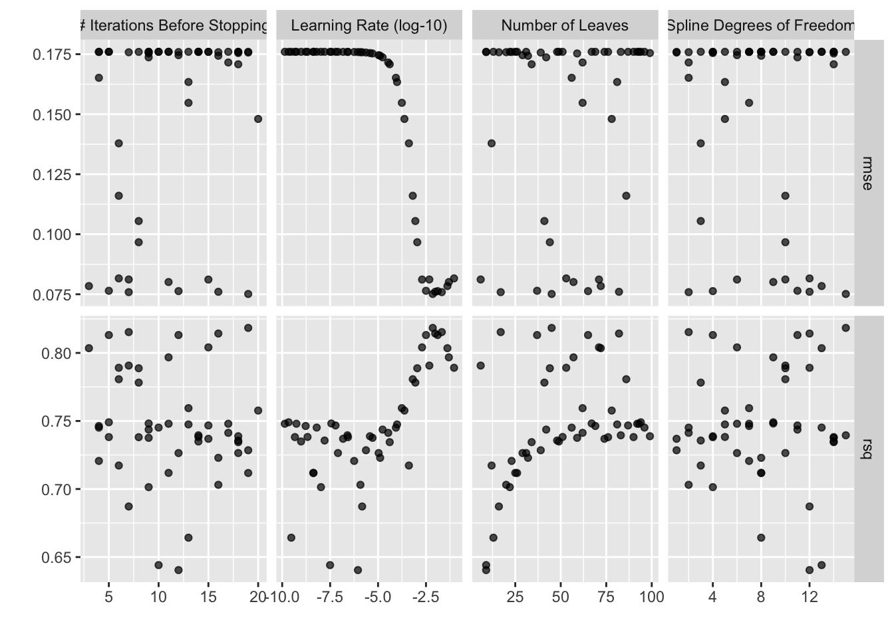
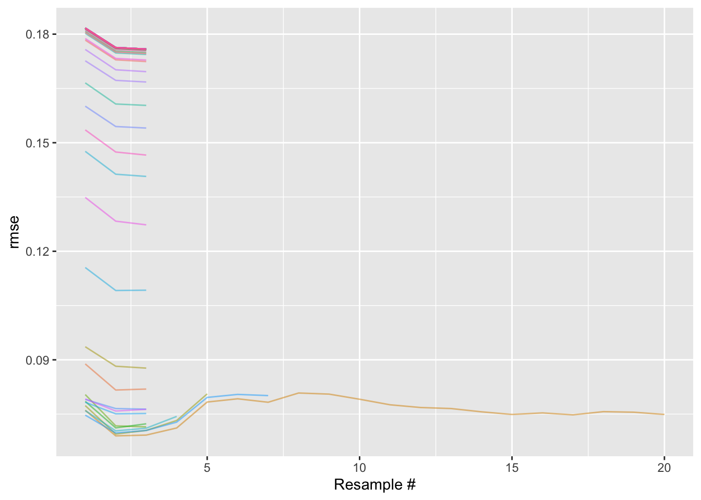
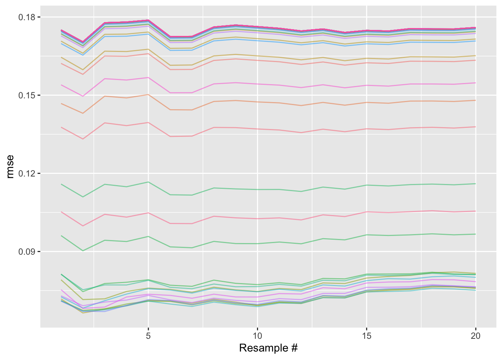

Especially for large amounts of data or large grids of parameters, the time and resources needed to tune statistical models can quickly become a barrier to getting machine learning models deployed. Many examples online demonstrating how to tune hyperparameters with tidymodels use tune_grid() on one CPU core. Making use of parallel processing and using a near-drop-in replacement for tune_grid() can speed up hyperparameter tuning by 20-30x!
Setup: grid search
In many examples online demonstrating machine learning with tidymodels, grid search via tune_grid() is the workhorse behind tuning hyperparameters. tune_grid() computes a set of performance metrics for a set of candidate model parameters across resamples of data; the parameters that result in the most performant models can then be used to train a model on the entire training set. We’ll quickly put together an example grid search with tune_grid() to benchmark how long it takes before introducing two strategies to speed the process up—parallel processing and racing via ANOVA.
We’ll make use of the ames housing data included as part of the tidymodels meta-package to demonstrate hyperparameter tuning with grid search.
library(tidymodels)
ames
## # A tibble: 2,930 × 74
## MS_SubClass MS_Zoning Lot_Frontage Lot_Area Street Alley Lot_Shape
## * <fct> <fct> <dbl> <int> <fct> <fct> <fct>
## 1 One_Story_1946_and_Ne… Resident… 141 31770 Pave No_A… Slightly…
## 2 One_Story_1946_and_Ne… Resident… 80 11622 Pave No_A… Regular
## 3 One_Story_1946_and_Ne… Resident… 81 14267 Pave No_A… Slightly…
## 4 One_Story_1946_and_Ne… Resident… 93 11160 Pave No_A… Regular
## 5 Two_Story_1946_and_Ne… Resident… 74 13830 Pave No_A… Slightly…
## 6 Two_Story_1946_and_Ne… Resident… 78 9978 Pave No_A… Slightly…
## 7 One_Story_PUD_1946_an… Resident… 41 4920 Pave No_A… Regular
## 8 One_Story_PUD_1946_an… Resident… 43 5005 Pave No_A… Slightly…
## 9 One_Story_PUD_1946_an… Resident… 39 5389 Pave No_A… Slightly…
## 10 Two_Story_1946_and_Ne… Resident… 60 7500 Pave No_A… Regular
## # ℹ 2,920 more rows
## # ℹ 67 more variables: Land_Contour <fct>, Utilities <fct>, Lot_Config <fct>,
## # Land_Slope <fct>, Neighborhood <fct>, Condition_1 <fct>, Condition_2 <fct>,
## # Bldg_Type <fct>, House_Style <fct>, Overall_Cond <fct>, Year_Built <int>,
## # Year_Remod_Add <int>, Roof_Style <fct>, Roof_Matl <fct>,
## # Exterior_1st <fct>, Exterior_2nd <fct>, Mas_Vnr_Type <fct>,
## # Mas_Vnr_Area <dbl>, Exter_Cond <fct>, Foundation <fct>, Bsmt_Cond <fct>, …The data set contains information on 2,930 properties in Ames, Iowa. We’ll model the log home sale price using predictors related a home’s location, size, and condition.
ames <- ames %>% mutate(Sale_Price = log10(Sale_Price))First, splitting the data into training and testing sets and then resampling the training set using v-fold cross-validation:
set.seed(1)
ames_split <- initial_split(ames, strata = "Sale_Price")
ames_train <- training(ames_split)
ames_test <- testing(ames_split)
set.seed(2)
ames_folds <- vfold_cv(ames_train, v = 20)Then, we’ll define a boosted tree ensemble model. We first load the bonsai package, which defines parsnip wrappers for the gradient boosting framework LightGBM (among others), and then define a model specification using parsnip.
library(bonsai)
bt_spec <-
boost_tree(learn_rate = tune(), stop_iter = tune(), trees = 1000) %>%
set_engine("lightgbm", num_leaves = tune()) %>%
set_mode("regression")We tune a number of main model parameters as well as the engine parameter num_leaves. Rather than tuning the number of trees, we tune stop_iter, the number of boosting iterations without improvement before stopping training.
We’ll also use a recipe to pre-process the data. This one is adapted from the book Tidy Modeling with R:
bt_rec <-
recipe(Sale_Price ~ Neighborhood + Gr_Liv_Area + Year_Built + Bldg_Type +
Latitude + Longitude, data = ames_train) %>%
step_log(Gr_Liv_Area, base = 10) %>%
step_other(Neighborhood, threshold = 0.05) %>%
step_dummy(all_nominal_predictors()) %>%
step_interact( ~ Gr_Liv_Area:starts_with("Bldg_Type_")) %>%
step_ns(Latitude, Longitude, deg_free = tune())Note that we tune the degrees of freedom deg_free parameter of the natural spline step.
Bundling the model and preprocessing together into a workflow:
bt_wflow <- workflow(bt_rec, bt_spec)Each argument we’ve tagged to tune() is now represented in the workflow. We can summarize that set of parameters needing tuning by extracting them from the workflow:
extract_parameter_set_dials(bt_wflow)
## Collection of 4 parameters for tuning
##
## identifier type object
## learn_rate learn_rate nparam[+]
## stop_iter stop_iter nparam[+]
## num_leaves num_leaves nparam[+]
## deg_free deg_free nparam[+]A grid search involves taking candidate values for each of these parameters and evaluating their resulting performance against resamples of the data. A model configuration is a workflow with a specific value sampled for each tuning parameter; we’re searching for the model configuration that results in the best possible performance. We’ll carry out a grid search across 50 model configurations with tidymodels using tune_grid() and time how long it takes using system.time().
set.seed(3)
bt_time_grid <- system.time(
bt_res_grid <- tune_grid(bt_wflow, ames_folds, grid = 50)
)bt_res_grid is an object that gives us insight into various aspects of the tuning process like resampling variation, performance metrics, and issues in model fitting.
bt_res_grid
## # Tuning results
## # 20-fold cross-validation
## # A tibble: 20 × 4
## splits id .metrics .notes
## <list> <chr> <list> <list>
## 1 <split [2087/110]> Fold01 <tibble [100 × 8]> <tibble [0 × 3]>
## 2 <split [2087/110]> Fold02 <tibble [100 × 8]> <tibble [0 × 3]>
## 3 <split [2087/110]> Fold03 <tibble [100 × 8]> <tibble [0 × 3]>
## 4 <split [2087/110]> Fold04 <tibble [100 × 8]> <tibble [0 × 3]>
## 5 <split [2087/110]> Fold05 <tibble [100 × 8]> <tibble [0 × 3]>
## 6 <split [2087/110]> Fold06 <tibble [100 × 8]> <tibble [0 × 3]>
## 7 <split [2087/110]> Fold07 <tibble [100 × 8]> <tibble [0 × 3]>
## 8 <split [2087/110]> Fold08 <tibble [100 × 8]> <tibble [0 × 3]>
## 9 <split [2087/110]> Fold09 <tibble [100 × 8]> <tibble [0 × 3]>
## 10 <split [2087/110]> Fold10 <tibble [100 × 8]> <tibble [0 × 3]>
## 11 <split [2087/110]> Fold11 <tibble [100 × 8]> <tibble [0 × 3]>
## 12 <split [2087/110]> Fold12 <tibble [100 × 8]> <tibble [0 × 3]>
## 13 <split [2087/110]> Fold13 <tibble [100 × 8]> <tibble [0 × 3]>
## 14 <split [2087/110]> Fold14 <tibble [100 × 8]> <tibble [0 × 3]>
## 15 <split [2087/110]> Fold15 <tibble [100 × 8]> <tibble [0 × 3]>
## 16 <split [2087/110]> Fold16 <tibble [100 × 8]> <tibble [0 × 3]>
## 17 <split [2087/110]> Fold17 <tibble [100 × 8]> <tibble [0 × 3]>
## 18 <split [2088/109]> Fold18 <tibble [100 × 8]> <tibble [0 × 3]>
## 19 <split [2088/109]> Fold19 <tibble [100 × 8]> <tibble [0 × 3]>
## 20 <split [2088/109]> Fold20 <tibble [100 × 8]> <tibble [0 × 3]>Various helper functions allow us to quickly learn from this output. For example, plotting the resampled performance for each tuning parameter:
autoplot(bt_res_grid)
Or, picking out the best tuning parameter combination according to the root mean squared error (RMSE):
collect_metrics(bt_res_grid) %>%
filter(.metric == "rmse") %>%
arrange(mean)
## # A tibble: 50 × 10
## learn_rate stop_iter num_leaves deg_free .metric .estimator mean n
## <dbl> <int> <int> <int> <chr> <chr> <dbl> <int>
## 1 0.00713 19 45 15 rmse standard 0.0751 20
## 2 0.0211 7 17 2 rmse standard 0.0759 20
## 3 0.00960 16 82 12 rmse standard 0.0760 20
## 4 0.0129 12 65 4 rmse standard 0.0763 20
## 5 0.00317 5 37 11 rmse standard 0.0764 20
## 6 0.0416 3 72 13 rmse standard 0.0784 20
## 7 0.0494 11 57 9 rmse standard 0.0801 20
## 8 0.00198 15 71 6 rmse standard 0.0811 20
## 9 0.00473 7 6 10 rmse standard 0.0812 20
## 10 0.0921 6 53 12 rmse standard 0.0816 20
## # ℹ 40 more rows
## # ℹ 2 more variables: std_err <dbl>, .config <chr>Our best validation set RMSE averaged out to 0.075.
For each of the 50 model configurations, the configuration was fitted 20 (once for each fold) times. That’s 1000 model fits!
In total, these results took 1005 seconds, or about 17 minutes, to generate. This isn’t terribly long, but our input data is quite small compared to that from many of the real-world applications of machine learning.
tidymodels includes support for two optimizations that will allow us to tune this model much more quickly!
Parallel processing
The first optimization is parallel processing. At the moment, I’m writing this blog post on a computer with 10 cores. Without any additional configuration, R will only make use of one of those cores to carry out computations. Parallel processing tools will allow me to allot all of the computations under the hood in tune_grid() to best make use of all of the cores available to me.
tidymodels supports a variety of parallel processing backends. I’ll set one up using the parallel and doParallel packages:
library(doMC)
registerDoMC(cores = 10)Running the same tuning code as before, now, tune_grid() will pick up on our newly registered backend and distribute its computations across the available cores:
set.seed(4)
bt_time_par <- system.time(
bt_res_par <- tune_grid(bt_wflow, ames_folds, grid = 50)
)In total, these results took 136 seconds to generate! This is about 7.4 times faster than the single-core approach. There’s a bit of overhead associating with sending computations out to different cores and then compiling them back together, and some of the computations needed to tune hyperparameters can’t be parallelized, so the factor of speedup when using parallel processing while tuning is slightly less than the factor increase in number of cores.
Already, a 7.4x speedup is a gamechanger for many machine learning workflows! This optimization assumes you have access to unutilized computing resources, though, which may not be the case for you; this next one doesn’t require any extra computing power.
Racing
In these previous examples, we’ve evaluated 50 model configurations against 20 resamples, resulting in 1000 model fits. We can use an approach called racing to cut down on that number of model fits.
Racing via ANOVA models, implemented in the tune_race_anova() function in finetune, works by fitting each model configuration to only a few of the resamples and then, at each additional resample, removing model configurations that are unlikely to be more performant than the others.
library(finetune)Visualization helpers in the finetune package are super effective for developing intuition on this process, so let’s go ahead and tune using racing and then use the output to learn more about the process. First, we’ll bump the number of cores back to one so that we can observe the effect of only racing:
registerDoMC(cores = 1)Now, tuning using racing:
set.seed(5)
bt_time_race <- system.time(
bt_res_race <- tune_race_anova(bt_wflow, ames_folds, grid = 50)
)The resulting object bt_res_race looks quite similar to the typical grid search output:
bt_res_race
## # Tuning results
## # 20-fold cross-validation
## # A tibble: 20 × 5
## splits id .order .metrics .notes
## <list> <chr> <int> <list> <list>
## 1 <split [2087/110]> Fold01 3 <tibble [100 × 8]> <tibble [0 × 3]>
## 2 <split [2087/110]> Fold05 1 <tibble [100 × 8]> <tibble [0 × 3]>
## 3 <split [2087/110]> Fold10 2 <tibble [100 × 8]> <tibble [0 × 3]>
## 4 <split [2087/110]> Fold16 4 <tibble [8 × 8]> <tibble [0 × 3]>
## 5 <split [2087/110]> Fold15 5 <tibble [6 × 8]> <tibble [0 × 3]>
## 6 <split [2087/110]> Fold11 6 <tibble [4 × 8]> <tibble [0 × 3]>
## 7 <split [2087/110]> Fold04 7 <tibble [4 × 8]> <tibble [0 × 3]>
## 8 <split [2087/110]> Fold02 14 <tibble [2 × 8]> <tibble [0 × 3]>
## 9 <split [2087/110]> Fold03 19 <tibble [2 × 8]> <tibble [0 × 3]>
## 10 <split [2087/110]> Fold06 15 <tibble [2 × 8]> <tibble [0 × 3]>
## 11 <split [2087/110]> Fold07 11 <tibble [2 × 8]> <tibble [0 × 3]>
## 12 <split [2087/110]> Fold08 16 <tibble [2 × 8]> <tibble [0 × 3]>
## 13 <split [2087/110]> Fold09 20 <tibble [2 × 8]> <tibble [0 × 3]>
## 14 <split [2087/110]> Fold12 10 <tibble [2 × 8]> <tibble [0 × 3]>
## 15 <split [2087/110]> Fold13 8 <tibble [2 × 8]> <tibble [0 × 3]>
## 16 <split [2087/110]> Fold14 13 <tibble [2 × 8]> <tibble [0 × 3]>
## 17 <split [2087/110]> Fold17 9 <tibble [2 × 8]> <tibble [0 × 3]>
## 18 <split [2088/109]> Fold18 18 <tibble [2 × 8]> <tibble [0 × 3]>
## 19 <split [2088/109]> Fold19 12 <tibble [2 × 8]> <tibble [0 × 3]>
## 20 <split [2088/109]> Fold20 17 <tibble [2 × 8]> <tibble [0 × 3]>The plot_race() helper visualizes the racing process:
plot_race(bt_res_race) + labs(x = "Resample #")
In this plot, we see 50 differently colored lines, each corresponding to a model configuration. For a given resample, each model configuration has an associated RMSE, plotted on the y axis.
In racing, resamples are assigned a random order and then evaluated in order. The x axis in this case thus roughly corresponds to time elapsed.
Moving from left to right, we initially see that every model configuration was evaluated with the first three resamples. After those first three resamples (called the “burn-in” period), the racing procedure stops and evaluates the distributions of RMSEs for each model configuration. Using a repeated measures ANOVA model, we can evaluate whether the distributions of RMSEs from some of the model configurations are not statistically significantly different from the current “best” RMSE distribution. The model configurations resulting in distributions of RMSEs that are not statistically significantly different from the current best, as well as the one resulting in the best RMSE distribution, are resampled again; the rest are set aside and not evaluated against any more resamples.
Intuitively, this makes sense; in the plot above, those upper-most lines are not horizontally centered in the same place as the lowest ones. Each point on that plot is a model fit, which takes lots of time to generate. If we feel confident that a model configuration defines a model that isn’t as performant as the current best one, why continue fitting it to more and more resamples? We can instead reroute those computing resources to evaluating the models that seem like contenders with the current best one.
So, after the burn-in period, we determine that many of the model configurations are no good, and evaluate only the remaining ones against the fourth resample. This adds a point to each of the distributions of errors corresponding to each model configuration, and those distributions are again passed to the repeated measures ANOVA model, which might find a couple more model configurations to remove. And so on. Ultimately, we end up only fully resampling (i.e. evaluating against all 20 resamples) a small fraction of the model configurations we initially started with.
The analogous plot for a regular grid search, like that generating bt_res_grid, would just have 50 lines stretching all the way across the x axis. Every model configuration is fully resampled:

A little silly.
Not having to carry out all of those additional model fits saves us a bunch of time! In total, these results took 189 seconds to generate, about 5.3 times faster than the single-core, grid search approach.
Do we see any loss in performance, though? No free lunch, Simon! Well, kind of. With some probability (see the racing control settings), the repeated measures ANOVA model will mistakenly boot a model configuration that was actually associated with performance comparable to the “best” model configuration. Note too, though, that evaluating all model configurations across all resamples doesn’t mean we can guarantee we’ve associated the true “best” model with the most performant metric. Variation abounds! So, I don’t lose sleep over it.
Again, on its own, this method is really powerful in cutting down on time-to-tune. In combination with parallel processing, we see marked speedups.
All together, now!
I’ll quickly spin up that parallel cluster again and then run the same code:
registerDoMC(cores = 10)
set.seed(6)
bt_time_race_par <- system.time(
bt_res_race_par <- tune_race_anova(bt_wflow, ames_folds, grid = 50)
)These results took 47 seconds to generate, 21.5 times faster than the single-core, conventional grid search approach. Scootin’! As the help-file for tune_race_anova() reads:
There is a compounding effect of racing and parallel processing but its magnitude depends on the type of model, number of resamples, number of tuning parameters, and so on.
This blog post is adapted from that help-file, which includes benchmarks from tuning a different model on a different data set, resulting in a similarly impressive speedup. Check that page out for another example!
Happy modeling. :)